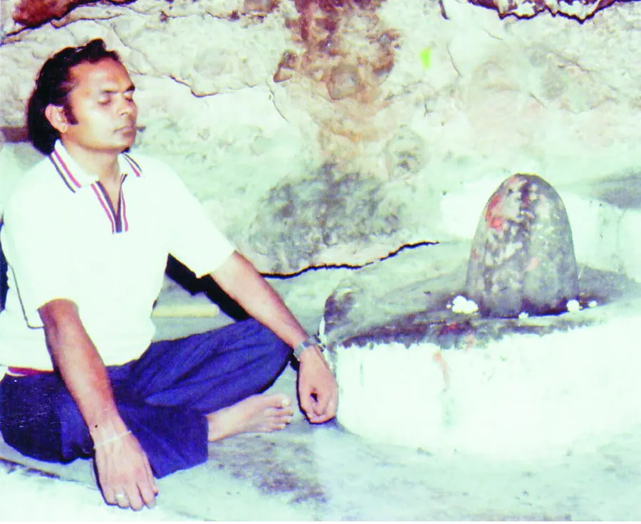

गुरु-स्थल और साधना का आरम्भ
टेकरी
15 वर्ष की आयु में जगी सत्य की पुकार
भैया श्री नन्दकिशोर शारदा की आध्यात्मिक साधना का प्रारम्भ सन् 1959 में मात्र 15 वर्ष की आयु में हुआ। पिता के आकस्मिक निधन ने उनके भीतर उस चैतन्य शक्ति को जानने का संकल्प जगाया, जो मानव शरीर को जीवित और गतिशील रखती है।
इसी आंतरिक पुकार से वे जोधपुर किले के पीछे लगभग 250-300 फीट ऊँची पहाड़ी पर स्थित प्राचीन, गुफानुमा ‘टेकरी माँ’ मंदिर पहुँचे, जो आगे चलकर उनका गुरु-स्थल और साधना-स्थली बना।

प्रेम, भक्ति और पूर्ण समर्पण की साधना
उन्होंने माँ त्रिपुरसुन्दरी को अपना गुरु एवं माँ मानकर प्रेम, भक्ति और पूर्ण समर्पण की साधना अपनाई। साधना की निर्धारित विधि न होने पर उन्होंने अनेक आध्यात्मिक प्रयोग किए और अपना सम्पूर्ण अस्तित्व माँ के चरणों में अर्पित कर दिया।
उनकी निष्काम साधना से प्रसन्न होकर माँ ने उन्हें दर्शन दिए और पुत्रवत् स्वीकार किया। टेकरी माँ का यह पावन स्थल आज भी भैयाजी की साधना, समर्पण और दिव्य अनुभूतियों की जीवंत स्मृति के रूप में चैतन्यता से स्पंदित है।